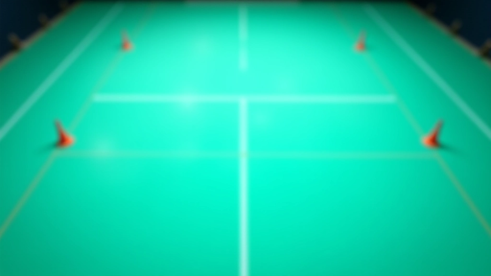
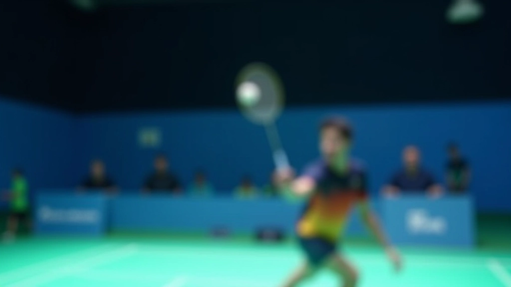
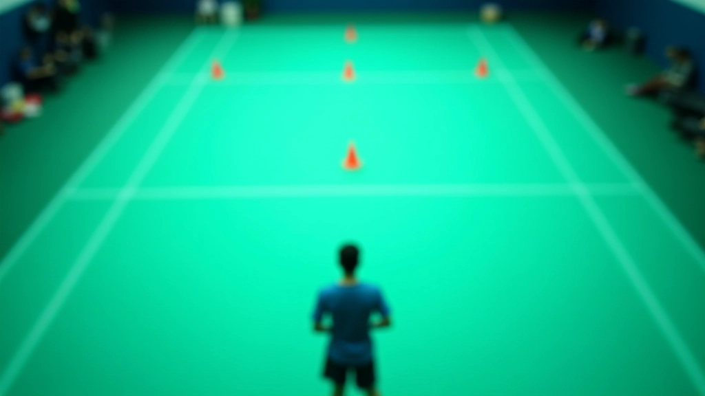
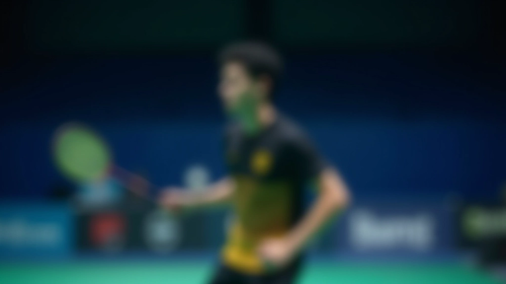
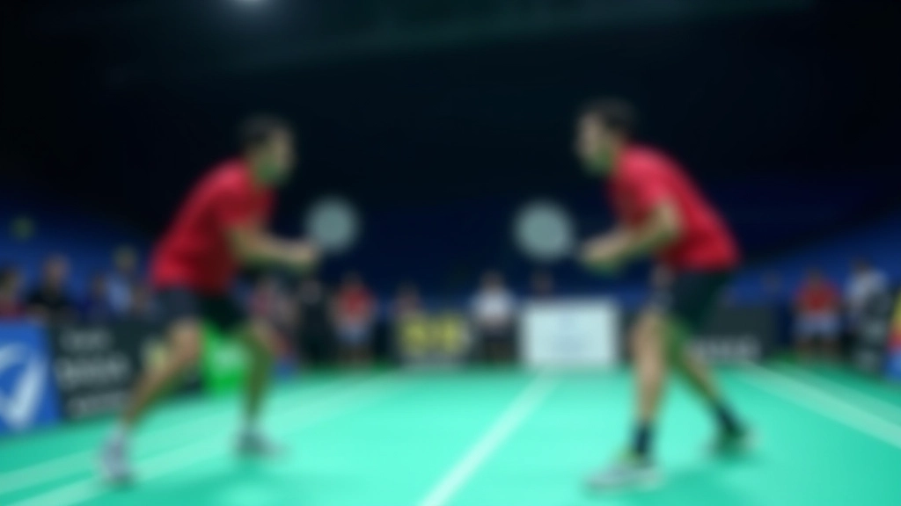

أساسيات الضربة العالية: من البداية
تعلم الخطوات الأساسية للضربة العالية من الصفر. نغطي وقفة القدمين والقبضة وحركة الذراع...
5 تمارين فعّالة تزيد من دقتك وسيطرتك. يمكنك تطبيقها في التدريب الفردي أو مع الفريق.

الدقة في الضربة العالية واللوب ليست موهبة فقط — إنها نتيجة تدريب منتظم. اللاعبون الجيدون يقضون ساعات في تحسين استهدافهم وسيطرتهم. هنا ستجد التمارين التي تعتمدها الفرق الجادة.
ما يميز هذه التمارين أنها واقعية وليست معقدة. لا تحتاج إلى معدات خاصة كثيرة — فقط ملعب، أقماع، وتركيز. كل تمرين مصمم لاستهداف جانب محدد من دقتك. بعد أسبوعين من التطبيق المنتظم، ستلاحظ تحسناً واضحاً في سيطرتك على الكرة.
تمارين موجهة لكل زاوية في الملعب
بناء العضلة الذاكرة تدريجياً
تحسن واضح بعد أسبوعين
هذا التمرين الأساسي يقويك على التركيز على نقطة واحدة. ضع 4 أقماع في الملعب — واحد في كل زاوية. من موقعك الأساسي، اضرب الكرة نحو كل قمع بدوره. لا تقلق بشأن السرعة — التركيز على الدقة أولاً.
الهدف هنا ليس الوصول إلى كل قمع في محاولة واحدة. بل تكرار التمرين 10 مرات متتالية لكل قمع. ستلاحظ أن المحاولات الأخيرة تصبح أفضل من الأولى — هذا طبيعي. العضلات تتعلم مع التكرار. عندما تتقن هذا التمرين بثقة، انتقل إلى الخطوة التالية: أضف حركة قدم قبل الضربة.


هنا تضرب 20 ضربة متتالية نحو منطقة محددة — مثلاً المربع الأيسر من ملعب الخصم. لا تنتظر بين الضربات. الهدف هو الثبات والاستقرار. ستشعر بأن ذراعك تتعب — هذا جزء من التمرين. التعب يكشف الأخطاء.
عندما تتعب، تميل لتغيير تقنيتك دون أن تلاحظ. الحفاظ على الدقة حتى مع التعب هو المهارة الحقيقية. في المباراة، أنت متعب دائماً. لذا التمرن على هذا يجهزك للمنافسة. كرر السلسلة 3 مرات، مع فاصل 3 دقائق بينهما.
معلومة مهمة
هذه التمارين معلومات تعليمية عامة. كل لاعب مختلف — قد تحتاج لتعديل التمارين حسب مستواك وخصائصك الجسدية. استشر مدربك الخاص لتكييف البرنامج مع احتياجاتك. التدريب الآمن يبدأ بفهم جسدك والاستماع له.
هذا التمرين يحاكي الواقع أكثر من غيره. لأن في المباراة، أنت لا تضرب نحو نقطة واحدة — تنتقل من زاوية لأخرى. ضع علامات في 6 نقاط مختلفة على ملعب الخصم. اضرب نحو النقطة الأولى، ثم الثانية، وهكذا. الهدف هو الانتقال السريع بين الزوايا مع الحفاظ على الدقة.
هذا يتطلب رؤية محيطية أفضل. أنت تركز على هدف واحد، لكنك تراقب باقي الملعب بنفس الوقت. كرر الدورة 5 مرات. كل دورة تأخذ حوالي دقيقة ونصف. إذا كنت تريد تحديياً أكبر، اطلب من زميل أن يرمي الكرة بشكل عشوائي قليلاً — ليس تماماً متوقع — حتى تتعلم التكيف.


الآن نضيف العنصر النفسي. اضرب 15 ضربة بسرعة عالية نحو منطقة محددة. لا تبطئ. السرعة + الدقة معاً — هذا هو التحدي. كل ضربة خاطئة تعني تكرار المجموعة من جديد. نعم، قد تحتاج لتكرار نفس المجموعة 3 أو 4 مرات قبل إكمالها دون أخطاء.
هذا التمرين يعلمك التركيز تحت الضغط. في المباراة، أنت مضطر للسرعة والدقة في نفس الوقت. لا يمكنك أن تبطئ فقط لأنك تريد أن تكون دقيقاً. التعود على هذا الضغط يزيد من ثقتك. عندما تدخل مباراة، تشعر أن هذا سهل مقارنة بالتمرين.
هذا التمرين الأخير يجمع كل شيء. تلعب نقطة حقيقية ضد خصم (أو مدرب). الهدف ليس الفوز — بل الحفاظ على الدقة في ضرباتك. كل مرة تخطئ، تدون النقطة. بعد 10 نقاط حقيقية، حساب كم مرة أخطأت. المجموعة التالية حاول تقليل الأخطاء.
ستشعر بفرق حقيقي. التمارين المعزولة مفيدة، لكن تطبيقها في موقف حقيقي يعطيك ثقة حقيقية. لاعب يمكنه أن يضرب بدقة 20 مرة متتالية في تمرين، قد لا يستطيع فعل ذلك تحت ضغط مباراة. لذا هذا التمرين الأخير هو الأهم — إنه يجسّر الفجوة بين التدريب والمنافسة.

لا تفعل كل التمارين في يوم واحد — ستتعب وتخسر التركيز. الخطة الأفضل: اختر تمرينين من القائمة في كل جلسة تدريب. اقضِ 15 دقيقة على كل واحد. بهذا تغطي التنوع وتحافظ على الجودة. بعد شهر من هذا الروتين، ستصبح ضرباتك أقوى وأكثر استقراراً.
احفظ ملاحظات عن كل جلسة. كم مرة أصبت الهدف؟ كم مرة أخطأت؟ هذه الأرقام توضح لك مسار تطورك.
3 مرات في الأسبوع أفضل من جلسة واحدة طويلة. العضلات تتعلم من التكرار المنتظم. اجعلها عادة.
التمارين ليست عن السرعة فقط. تأكد من أن تقنيتك سليمة. قد تحتاج لفيديو أو مراقبة مدرب.

فريق التحرير والمراجعة
كتبه فريق تحرير الريشة العالية، المتخصص في تقديم تمارين عملية وسهلة المتابعة لتحسين الضربة العالية واللوب.
تعلم الخطوات الأساسية للضربة العالية من الصفر. نغطي وقفة القدمين والقبضة وحركة الذراع...

اكتشف كيف تحول اللوب لعبتك الدفاعية. هذه الضربة تعطيك الوقت والمسافة اللازمة للع...

للاعبين المتقدمين: تعمق أكثر في التفاصيل الدقيقة والحيل التي تفصل بين اللاعب الج...